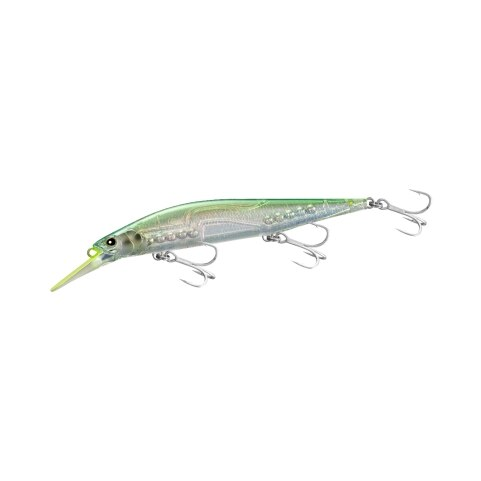
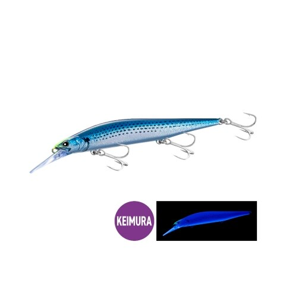
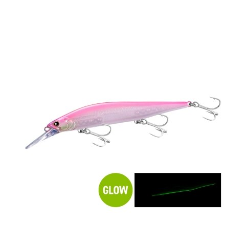
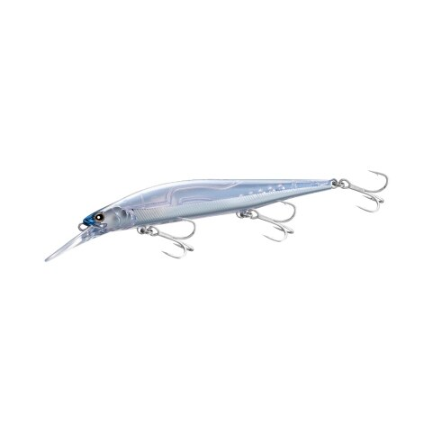

MDラウドジャーク120S
（MD LOUD JERK 120S）
MDラウドジャーク120SはSHIMANO（シマノ）のSW専用ジャークベイトです。
ラウドジャーク120SのMD（ミッドダイバー）モデルで、3mレンジをトレースして一段深い魚にアプローチできます。11個のボールウェイトによる飛距離と立ち上がり、強烈な「マラカスサウンド」はそのままに、青物・サワラ・シーバスなどのインショアゲームで活躍します。2026年9月発売の新製品です。

画像出典:SHIMANO公式HP
スペック
- メーカー
- SHIMANO（シマノ）
- タイプ
- ジャークベイト（シンキング・ミッドダイバー）
- 全長
- 120mm
- 自重
- 19g
- レンジ
- 約3m
- フック
- #4×3
- 重心
- 分散式球重心移動システム（ボールウェイト11個）
- ターゲット
- 青物・サワラ・シーバス
- 価格
- 2,400円（税別）
- 発売
- 2026年9月
▼今すぐチェック

MDラウドジャーク120Sの特徴
飛び・泳ぎ・サウンドでアピールする、MDレンジ攻略のSW専用ジャークベイト
-
分散式球重心移動システム
11個のボールウェイトを使った分散式の重心移動で、安定した飛距離と、すばやく転がる球による立ち上がりのよさを両立しています。
-
音で寄せる「マラカスサウンド」
11個のボールが鳴らす強烈な「マラカスサウンド」で、ベイトを散らしながらターゲットを引き寄せます。
-
ノーマルより一段深いレンジ
ダートアクションはそのままに、ノーマルのラウドジャーク120Sより一段深く潜り、3mレンジの魚を狙えます。
-
貫通ワイヤーで安心の強度
ダートには不利とされる貫通ワイヤーをあえて採用。ボディの形状や肉厚、内部構造でも強度を確保し、不意の大物にも対応します。
MDラウドジャーク120Sの使い方
基本はジャーキング。ロッドを小刻みにあおって、左右へのダートアクションでベイトが逃げ惑う動きを演出します。
ジャークの合間に入る「間」と、ボールウェイトの音が食わせのきっかけになるので、一定のリズムでジャークしつつ、ときどき止めてみましょう。
MDラウドジャーク120Sの得意な状況
表層の反応が薄く、魚が少し深いレンジ（3m前後）にいるとき。サワラ・サゴシや青物のキャスティング、シーバスのデイゲームで、もう一段下のレンジを探りたい場面に向いています。
ワンポイント
シマノのジャークベイトは、潜行深度の浅い順に「ラウドジャーク120S → MDザンバーノSW115S → MDラウドジャーク120S」。水深や時間帯、ベイトの反応に合わせて選ぶと、レンジを正確に合わせやすくなります。
ラウドジャークの使い分け
| モデル | 全長／自重 | 得意な場面 |
|---|---|---|
| ラウドジャーク120S | 120mm／18g | ノーマルモデル。より浅いレンジをダートで |
| MDラウドジャーク120S | 120mm／19g | ミッドダイバー。約3mレンジを攻める（本記事のモデル） |
同じ120mmのラウドジャークでも、潜るレンジが違います。表層近くはノーマル、もう一段下はMDと、魚のいるレンジで使い分けましょう。
人気カラー
全10色の中から4色を紹介します。

001 STチャートリップサービス視認性を重視したチャート系。ジャークの動きを目で追いやすいカラー。

004 SKコノシロコノシロを意識したケイムラ入りのカラー。コノシロパターンに。

005 ピンクバックパールシャッドピンクバックとパールのアピールカラー。朝マズメや濁りに。

009 ハーフミラーベイトミラーのフラッシングで見せるベイト系。澄み潮のデイゲームに。
画像出典:SHIMANO公式HP
MDラウドジャーク120Sに似ているルアー
-
 ブローウィン140J
ブルーブルー
詳細はこちら＞
ブローウィン140J
ブルーブルー
詳細はこちら＞
全長140mm・自重26gのジャーキングミノー。サワラキャスティングで支持されている1本。
-
 レアリス ジャークベイトSWリミテッド160S
DUO
詳細はこちら＞
レアリス ジャークベイトSWリミテッド160S
DUO
詳細はこちら＞
全長160mm・自重35gのジャークベイト。より大きなシルエットでジャーキングしたいときに。
-
 ボアーSS145
マリア
詳細はこちら＞
ボアーSS145
マリア
詳細はこちら＞
全長145mm・自重50gのジャーキングミノー。より重く、遠くの青物を狙いたいときに。